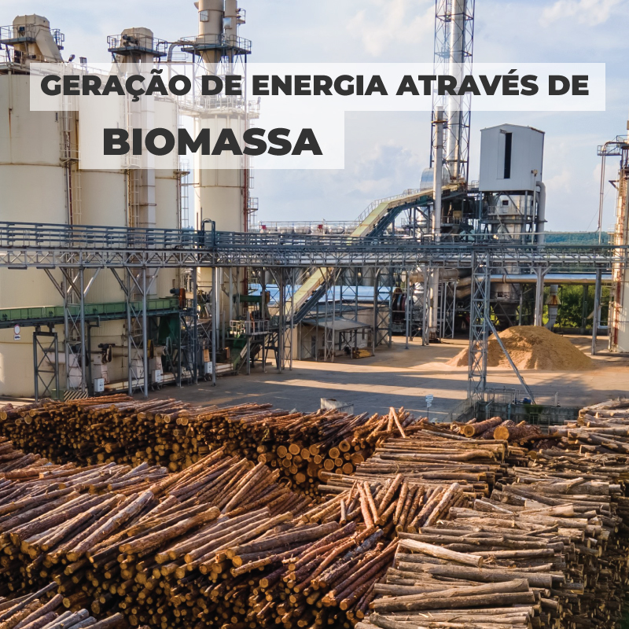

A energia de biomassa é produzida a partir de uma matéria orgânica de origem animal ou vegetal.
Essa energia de biomassa pode gerar calor, energia elétrica e também energia mecânica. A biomassa é considerada
uma fonte de energia renovável e pode ser usada para substituir os combustíveis fósseis.
A eletricidade de biomassa pode ser utilizada na produção de calor, seja para uso térmico industrial,
geração de eletricidade e até pode ser transformada em outras formas de energias sólidas,
líquidas e gasosas. Essas biomassas são produzidas em enormes quantidades no agronegocio que é uma das atividades
mais importantes para a produção do biodiesel, etanol e biocombustíveis.

COMO FUNCIONA A BIOMASSA
A biomassa é uma fonte de produção de energia que ocorre principalmente através de procedimentos de pirólise, gaseificação, combustão e co-combustão. São fontes de biomassa, os vegetais e os bifoliados, que existem em quatro formas sendo elas a
transformação da biomassa em energia: pirólise, gaseificação, combustão e co-combustão.
SUAS VANTAGENS
VANTAGENS:
A biomassa é uma fonte renovável.
Gera poucos poluentes quando comparada á utilização de fontes não renováveis, representados principalmente pelos combustíveis fósseis.
A biomassa é uma energia que possui baixo custo para aquisição, principalmente se tratando no caso da biomassa sólida.
Possui alta capacidade bem alta de reaproveitamento dos resíduos orgânicos.
DESVANTAGENS:
Emissões de poluentes: A queima de biomassa pode transmitir poluentes
atmosféricos como óxidos de nitrogênio, óxidos de enxofre e partículas, impulsionando a poluição do ar e problemas de saúde.
Uso de recursos naturais: A produção de biomassa acaba optando pelo uso de recursos naturais, como fertilizantes, solo, e água, o que pode ocasionar impactos negativos no meio ambiente.
Variação sazonal na produção: A disponibilidade da biomassa pode acabar variando sazonalmente,
o que pode atrapalhar e dificultar a manuntenção de um suprimento constante de energia.
Competição por terras agrícolas: A produção de biomassa para energia pode disputar com a
produção de alimentos ocasionando o aumento dos preços de mantimentos e a disputa por terras agrícolas.